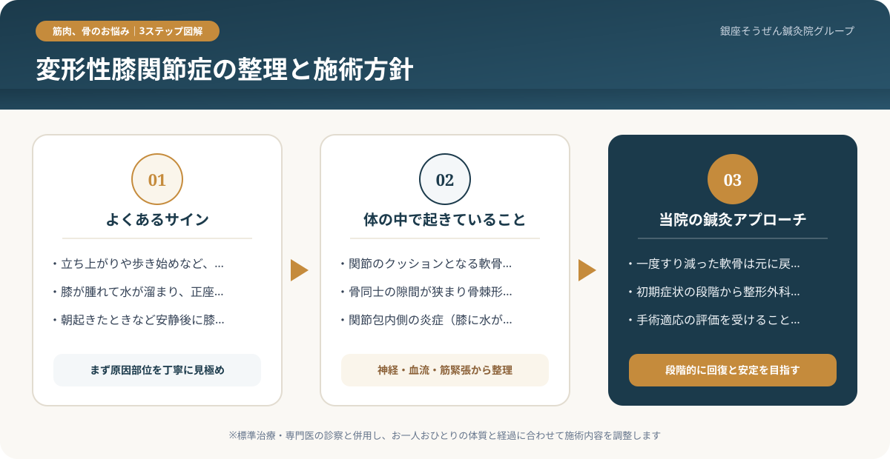
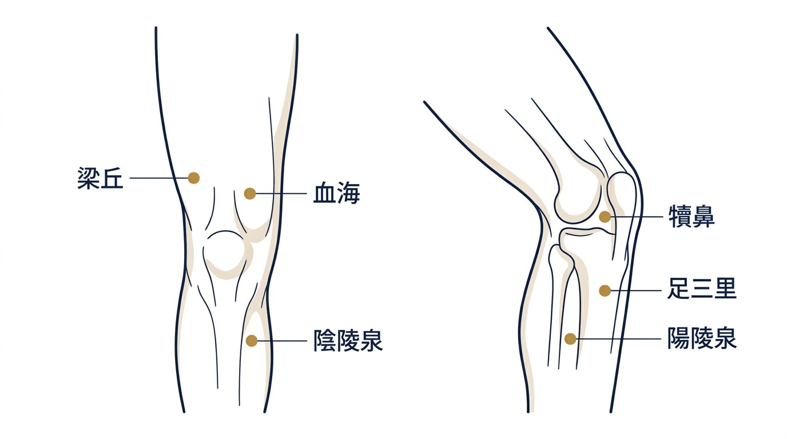

変形性膝関節症の鍼灸
膝軟骨のすり減りで痛みや関節水腫が起こる疾患。早期の医療機関受診と併用し膝・腰の緊張を整えます。
まず知っておきたい要点と改善の流れ

関節のクッションとなる軟骨が加齢や筋力低下によって弾力性を失いすり減ることで、骨同士の隙間が狭まり骨棘形成や変形、関節包内側の炎症（膝に水が溜まる状態）を引き起こす疾患です。肥満や遺伝的要因、過去の骨折・靭帯や半月板損傷、O脚・X脚などの構造異常、大腿四頭筋の筋力低下も進行に関与します。
このようなお悩みはありませんか？
- ✓立ち上がりや歩き始めなど、動き出すときに膝が痛む
- ✓膝が腫れて水が溜まり、正座や階段の上り下りがつらい
- ✓朝起きたときなど安静後に膝のこわばりや引っ掛かりを感じる
- ✓膝を伸ばし切れず、歩行時の不安定感や関節の変形が気になる
当院の施術アプローチ・改善の流れ
なぜ鍼灸で改善へ向かうのか？（作用機序の図解）
変形性膝関節症に対する鍼灸は、トリガーポイント解放と疼痛抑制系の作用機序を通じて、お体本来の回復力を引き出します。

手技では届きにくい深層筋の硬結（トリガーポイント）へ繊細な鍼で直接刺激を届けます。
CGRPや一酸化窒素の放出により微小血管が拡張し、滞っていた発痛物質の洗い流しを促します。
脊髄後角で痛み信号を遮断し、脳幹からの内因性鎮痛物質（エンドルフィン等）の働きを高めます。
防御性の筋スパズムが解け、関節可動域と本来の動きやすさが段階的に回復します。
院長YouTube解説・関連動画
ほとんどの変形性膝関節症の原因は関節軟骨の老化
ほとんどの変形性膝関節症の原因は関節軟骨の老化です。他にも、肥満や遺伝子なども関係していると考えられています。
歳を取ると関節軟骨がだんだんと弾力性を失いすり減っていきます。軟骨がすり減ることによって関節が変形し、変形性膝関節症を発症するのです。
場合によっては、骨折や靱帯や半月板などの損傷や、化膿性関節炎などの感染症の後遺症が原因で起こることもあります。
加齢:加齢に伴い、軟骨の耐久性が低下し、変形性膝関節症のリスクが高まります。
肥満:体重が増加すると、膝関節にかかる負荷が増え、軟骨の摩耗が進行しやすくなります。
遺伝的要因:家族歴や遺伝的な要因が、膝関節の軟骨の質や構造に影響を与え、変形性膝関節症のリスクが高まることがあります。
外傷や過去の怪我:膝の骨折、靭帯損傷、半月板損傷などの外傷が、将来的に変形性膝関節症を発症するリスクを高めます。
反復的なストレス:特定の職業やスポーツによる膝への反復的なストレスが、軟骨の摩耗を引き起こすことがあります。
関節の構造異常:O脚やX脚など脚の変形、膝関節の構造異常が軟骨の均等な摩耗を妨げることがあります。
筋力の低下:大腿四頭筋など膝関節を支える筋肉の弱さが、膝の安定性を低下させ、軟骨の摩耗を加速させることがあります。
改善方法は、薬やヒアルロン酸注射、手術やリハビリなど
変形性膝関節症を改善するためには、薬やヒアルロン酸注射、手術やリハビリなど様々です。器具を使って改善に取り組むこともあります。
症状が軽い場合、痛み止めの薬やヒアルロン酸注射などで改善を行うことが多いです。リハビリテーションや膝を温めることで改善に取り組むこともあります。
改善を行なってもなかなか効果が見られない場合、手術を行うこともあります。症状に合わせて内視鏡手術や骨を切って変形を矯正する手術、人工膝関節置換術などの手術が行われます。
物理的な方法:専門家による指導のもとで行う筋力トレーニング、ストレッチ、関節の可動域を改善するエクササイズが、関節の機能を向上させ、痛みを軽減します。
運動:特に水泳や水中ウォーキングなどの低衝撃運動などの定期的な運動が推奨されます。これにより筋力が強化され、関節のサポートが向上します。
体重管理:体重の適正化は、膝関節への負担を減らし、痛みの軽減に役立ちます。
非ステロイド性抗炎症薬（NSAIDs）:痛みと炎症を和らげるために、イブプロフェン、ナプロキセンなどが処方されることがあります。
鎮痛剤:アセトアミノフェン（パラセタモール）などの鎮痛剤が痛みの管理に用いられることがあります。
関節内注射:コルチコステロイドの注射やヒアルロン酸の注射が、痛みの軽減と関節機能の向上に用いられることがあります。
外科手術:症状が重度で保存的な方法で改善が見られない場合には、膝関節置換術や骨切り術などの外科手術が検討されます。
・非ステロイド性抗炎症薬（NSAIDs）
効果: 痛みと炎症を和らげます。
例: イブプロフェン、ナプロキセン、ディクロフェナクなど。
注意点: 長期使用は胃腸障害や腎機能障害などの副作用を引き起こす可能性があるため、用法用量を守ることが重要です。
・鎮痛剤
効果: 軽度から中等度の痛みを和らげます。
例: アセトアミノフェン（パラセタモール）。
注意点: アセトアミノフェンは肝臓に影響を与える可能性があるため、過剰摂取に注意が必要です。
・コルチコステロイドの関節内注射
効果: 炎症と痛みを一時的に軽減します。
注意点: 長期的な使用は関節のさらなる損傷を引き起こす可能性があるため、使用は制限されます。
・ヒアルロン酸の関節内注射
効果: 関節の潤滑を改善し、痛みを軽減することが期待されます。
注意点: 効果には個人差があり、全ての人に効果的とは限りません。
🎥 他のYouTube切り抜き・解説を読む（あと1件）▼
50代女性Jさんの場合
膝の内側の痛みと腫れ。曲げ伸ばし時の引っ掛かりが悩み。今回が4回目の鍼灸。ぎゅっとすると奥が痛いがだいぶ深く曲げれるようになってきた。最初の頃足がつけないくらい痛かったからだんだん痛みが和らいできた。奥がなんとなくまだ違和感はあるけどだいぶ曲げれるようになった。
曲げた時に中にまだ水が溜まっているため圧縮されてしんどいと思うと思いますが、水がもう少し抜ければ良くなります。水は裏に溜まっていますが、もう一息です。鍼をして水の再吸収が進めばすぐに良くなると見ています。
中の炎症はだいぶ引いています。膝と膝の間の関節包に水が溜まることで痛みや違和感を感じます。その袋の膜に刺激すると水を一生懸命吸収しようとします。中で炎症が起きていると体は水を溜めないといけないと思い、どんどん水が溜まってしまいます。その炎症を抑えるために冷やしましょうとアドバイスをしています。
外側に溜まった水には関節包に沿わせて鍼をすることで溜まった水を逃します。
あとは腰だけ悪いところがあります。腰が悪くなると膝にも影響することがあるため、根源でもある腰を中心に施術する必要があります。
大体5cmの鍼を入れました。1番悪いところは3cm鍼を入れ、四方八方から集中的に狙いました。水の再吸収が数日後に始まって鍼や違和感が軽減されれば効果が期待できます。これでだいぶ落ち着くはずです。
腰からくる膝の痛みがあります。膝は問題ではなく腰が悪くて膝が悪くなることもあるため、そこも取らないといけません。膝は曲げ切れていたので水が引いてくると落ち着くはずです。
おすすめ記事
股関節・膝・太もものツボ図解とセルフケア
実際の施術ではお一人おひとりの体質・症状に合わせて選穴しますが、股関節・膝・太もも（変形性膝関節症・ランナー膝等）の筋骨格系トラブルの臨床でよく用いられる代表的なツボの目安です。

📌 代表的なツボの詳細一覧表を開く（6穴） ▼
| ツボ名 | 位置の目安 | 主な狙い | セルフケアの注意点 |
|---|---|---|---|
| 梁丘（りょうきゅう） | 膝のお皿の外上角から指3本分上の太もものくぼみ | 大腿四頭筋の緊張緩和・階段昇降や立ち上がり時の膝痛ケア | 膝を軽く伸ばして力を抜いた状態で優しく押します。 |
| 血海（けっかい） | 膝のお皿の内上角から指3本分上の筋肉のくぼみ | 膝内側の痛み・内側広筋の血流改善とむくみケア | 強く押しすぎず、手のひらで温めながらじんわり圧迫します。 |
| 犢鼻（とくび） | 膝を軽く曲げたとき、お皿の下の外側にできるくぼみ | 膝関節前面の痛み・関節周囲の循環サポート | 関節に水が溜まっている・熱感がある時期は直接押さず温めも控えます。 |
| 足三里（あしさんり） | 膝のお皿の下外側（犢鼻）から指4本分下のすねの外側 | 下肢全体の筋疲労回復・膝周囲の筋バランスと鎮痛サポート | セルフ灸や指圧の定番穴として毎日続けやすいツボです。 |
| 陽陵泉（ようりょうせん） | 膝の外側下にある丸い骨（腓骨頭）の斜め下のくぼみ | 腸脛靭帯炎（ランナー膝）・筋腱の柔軟性回復 | しびれが出やすい神経の近くのため、優しい圧で調整します。 |
| 陰陵泉（いんりょうせん） | すねの内側の骨を膝方向へなぞり、指が止まるくぼみ | 鵞足炎・膝内側の張り・関節周囲のむくみ緩和 | 骨の際を無理にグリグリ押さず、気持ちよい範囲で押します。 |
国際査読論文の科学的エビデンス
国際的な医学データベース（PubMed・Cochrane等）で報告されている股関節・膝・太もも（変形性膝関節症・ランナー膝等）の筋骨格系トラブル領域の代表的な査読済み鍼灸研究をまとめています（標準治療との併用や研究上の限界を含めて正確に掲載）。
📚 査読論文データ・PubMed出典リンクを開く（4件） ▼
| 年・研究デザイン | 対象・規模 | 主な結果 | 限界・出典 |
|---|---|---|---|
| 2018年 IPDメタ解析 | 慢性筋骨格痛・頭痛 39 RCTs（n=20,827） | 全領域でシャム鍼・無治療比とも有意優位（P<0.001）、1年後も効果低下約15%で持続。 | 対照設定により効果量変動。 J Pain (PMID: 29198932) |
| 2020年 Cochraneレビュー | 慢性非特異的腰痛 33 RCTs（n=8,270） | 無治療比で直後疼痛（MD -20.32）と機能（SMD -0.53）が臨床的に有意改善。有害事象は軽微。 | 施術者盲検化不可・確実性は中等度〜非常に低。 Cochrane (PMID: 33306198) |
| 2024年 多施設RCT | 慢性坐骨神経痛 216名（6病院・52週追跡） | 4週時点の下肢痛VAS減少30.8mm vs 14.9mm（差-16.0mm, P<0.001）、52週後も持続。 | 中国3次病院限定・施術者盲検化不可。 JAMA Intern Med (PMID: 39401008) |
| 2016年 メタ解析 | 変形性膝関節症 10 RCTs | 短期（13週）で疼痛（WMD -1.24, p<0.001）と機能（p<0.001）が有意改善、26週も機能維持（p=0.016）。 | 試験間の異質性が高く運動療法併用が推奨。 JBJS Am (PMID: 27655986) |
参考文献・出典
- 2018年 IPDメタ解析（慢性筋骨格痛・頭痛 39 RCTs（n=20,827））— J Pain (PMID: 29198932)
- 2020年 Cochraneレビュー（慢性非特異的腰痛 33 RCTs（n=8,270））— Cochrane (PMID: 33306198)
- 2024年 多施設RCT（慢性坐骨神経痛 216名（6病院・52週追跡））— JAMA Intern Med (PMID: 39401008)
- 2016年 メタ解析（変形性膝関節症 10 RCTs）— JBJS Am (PMID: 27655986)
よくある質問（FAQ）
Q. 膝の痛みなのに腰への施術も関係ありますか？▼
Q. 日常生活で進行を予防するためにできることはありますか？▼
あわせて読まれる関連疾患（筋肉、骨のお悩み）
お尻から足後ろ側へ広がる痛みやしびれ。原因を見極め、腰・臀部・股関節の深層筋へ的確にアプローチします。
40〜60代に多い肩の激痛・可動域制限（五十肩）を、炎症期と拘縮期の見極めと鍼灸・全身バランス調整で改善する解説。
HTLV-1ウイルス感染者の一部に発症し、脊髄の炎症により両下肢のつっぱり・歩行障害や排尿障害が徐々に進む疾患です。
成長期の中高生がスポーツ中の急激な筋収縮により、骨盤の骨端線付着部で骨の一部が剥がれて起こる骨折です。
免疫系が自身の筋組織を攻撃して炎症と変性を起こし、対称性の筋力低下や筋痛をきたす全身性のリウマチ性疾患群です。
骨端軟骨とその周囲の軟部組織にX線上の点状石灰化像がみられ、低身長や関節・脊柱の異常を伴う遺伝性疾患群の総称です。
CLINICAL RECOVERY CASES
✨ 実際の臨床改善事例・回復経過を見る
銀座本院をはじめ各院での実際の改善事例を症状別に絞り込んでご確認いただけます。
おひとりで悩まず、まずはご相談ください
銀座本院・川口・大宮・横浜・博多・田無の各院でご予約を承っております。